Publié le 10 janvier 2020
Mis à jour le 17 mai 2020
Livres, books, boeke, izincwadi, ...
Parce que j’ai beaucoup de temps libre, je lis énormément. Depuis 2 ans, je ne lis plus qu’en anglais pour joindre l’utile à l’agréable et perfectionner mon niveau d’anglais. Je vous conseille vivement, si vous avez le temps, l’envie, la curiosité, de lire certains des livres suivants (surtout si vous venez nous voir en Afrique du Sud).
Cette page devient peu à peu assez longue donc je vous liste ci-dessous les résumés qui y figurent, dans l'ordre de mes lectures:
- A short history of South Africa (Gail Nattrass)
- A dry white Saison (André Brink)
- Born a crime (Trévor Noah)
- The Bang-Bang Club, Snapshots from a Hidden War (Greg Marinovich et Jao Silva)
- Little Ice Cream Boy (Jacques Pauw)
- Playing the enemy – Nelson Mandela and the game that made a nation (John Carlin)
- Jan Smuts – Unafraid of Greatness (Richard Steyn)
- An instant in the wind (André Brink)
- Age of Iron (John Maxwell Coetzee)
- Heart of the Hunter (Deon Meyer)
- On the contrary (Adré Brink)
- My traitor's heart (Rian Malan)
A short history of South Africa (Gail Nattrass, 2017)
Pas si brève que ça puisque le livre fait 400 pages. C’est le premier livre que j’ai lu quand j’ai appris que nous partions en Afrique du Sud. Passionnant. L’auteure, professeure d’histoire, raconte de manière très précise et pédagogique tout ce qui a construit l’Afrique du Sud, depuis le berceau de la civilisation (Little Foot, le plus ancien fossile d'hominidé datant de 3,7 millions d'années, a été découvert non loin de Johannesburg) jusqu’à la période riche et complexe du post-apartheid. L’auteure n’omet rien du rôle des minorités, de l’impact des migrations, du rôle joué par les femmes et décrit toute en nuances le parcours des grands personnages qui ont façonné le pays (Jan Smuts, De Klerk, Mandela…).
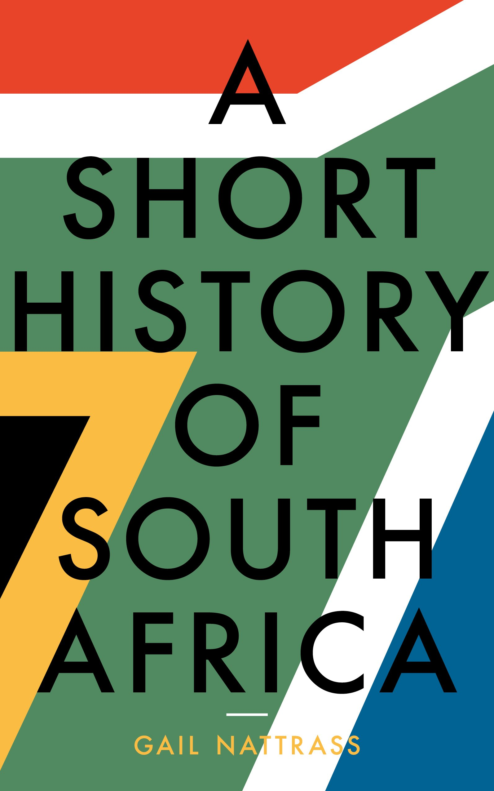
A dry white Saison (André Brink, 1979)
Une saison blanche et sèche
Roman policier qui se déroule pendant les années d’apartheid. Le personnage principal est un professeur blanc ordinaire, pas très politisé. Il se retrouve soudainement confronté à la violence et l’injustice du gouvernement et de la police envers un homme noir travaillant dans son école, incarcéré puis retrouvé mort en prison dans des conditions suspectes. Il va peu à peu ouvrir les yeux sur la réalité de l’apartheid, et, malgré les intimidations, il va mener l’enquête. C’est un livre très intéressant, car au-delà de ce qu’on apprend dans les livres d’histoire, cela raconte concrètement ce qu’était l’apartheid au quotidien. J’en profite pour remercier ceux qui m’ont parlé de ce livre. Et pour ceux qui ont la flemme, il y a un film avec Marlon Brando, Susan Sarandon et Donald Sutherland. Je ne l’ai pas vu mais, avec un tel casting, ça doit valoir le coup.
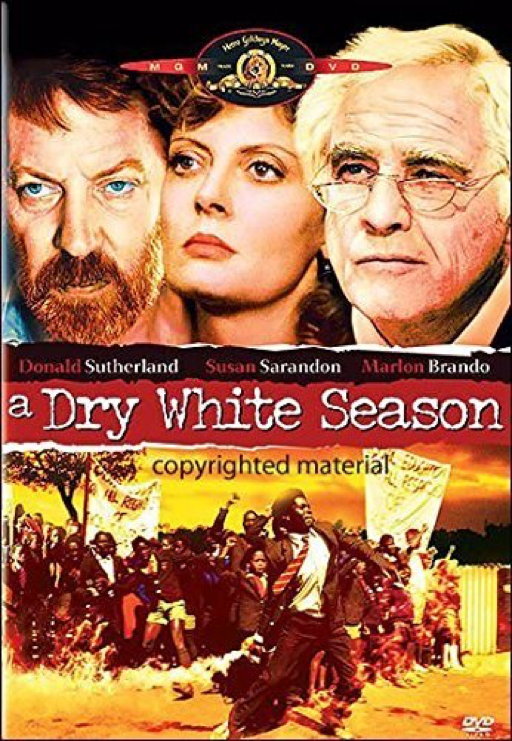
Born a crime (Trevor Noah, 2016)
Comme je vous le disais dans le précédent envoi, c’est l’autobiographie de Trevor Noah, un célèbre animateur de télévision sud-africain qui habite aux Etats Unis. Vous avez peut-être déjà entendu parler de lui car il a fait un sketch célébrant la victoire de l’Afrique à la dernière coupe du monde de football…
Trevor Noah est né en Afrique du sud pendant l’apartheid, d’un père suisse et d’une mère sud-africaine de l’ethnie Xhosa, alors que les relations entre blancs et noirs étaient punies d’emprisonnement. Il a été classifié comme « coloured » à la naissance (il y avait 4 catégories : black, coloured, indian, white…). Beaucoup de violence, beaucoup d’injustice mais un récit très drôle et des anecdotes pleines de recul sur cette période complexe de fin de l’apartheid. Un film est en cours de production parait-il.
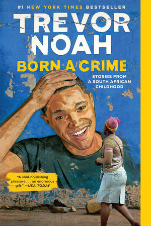
The Bang-Bang Club, Snapshots from a Hidden War (Greg Marinovich et Jao Silva, 2000)
Le Bang-Bang Club – instantanés d’une guerre cachée.
Ce livre m’a été conseillé, et prêté, par l’une de mes profs d’anglais. Ce fut un véritable coup de poing. La préface est du prix Nobel Desmond Tutu. Il raconte l’histoire de 4 photographes, aux parcours très divers, qui se retrouvent au même moment au même endroit et qui vont se lier d’amitié, aidés par les circonstances exceptionnelles. L’endroit, c’est Johannesburg et les nombreux townships qui entourent la ville (pour faire simple, les lieux où vivaient les populations noires). Le moment, c’est la période allant de l’assouplissement de l’apartheid (à la fin des années 80, avec notamment la libération de Mandela) à la tenue des premières élections démocratiques post-apartheid, en 1995. Cette période, que je connaissais très peu, fut d’une violence inouïe notamment entre les supporters de l’ANC (parti de Nelson Mandela) et l’Inkatha (autre parti, principalement Zulu). Une troisième force, invisible, prend part à ce conflit : en effet, la police (et certains services obscurs de l’administration) n’hésita pas à mettre de l’huile sur le feu, à attiser les haines, voire à prendre part au conflit pour affaiblir l’ANC, détruisant des preuves, armant des combattants, et participant directement à des tueries.
Les 4 photographes vont se croiser, partager des moments de vie et des émotions intenses, connaître le succès, la peur, la dépression. La presse les appellera le Bang-Bang Club. Ils y sont pour beaucoup dans la connaissance de cette guerre des townships.
Parmi les quatre, deux seulement sont encore en vie au moment de la rédaction du livre. Il s’agit de Greg Marinovich, prix Pulitzer 1991 pour une photo prise à Soweto montrant des supporters de l’ANC assassinant (avec pétrole et allumettes) un homme qu’ils pensent être un espion Zulu. Le photographe portugais Jao Silva est lui aussi en vie. Ken Oosterbroek fut tué lors d’un reportage en 1994 dans un township non loin de Johannesburg. Le 4e est Kevin Carter qui a remporté lui aussi le prix Pulitzer pour une photo célébrissime prise au Soudan représentant une petite fille qui meurt de faim, en plein soleil, avec un vautour qui la scrute. Cette photo, et toutes les questions qu’elle suscitera, le hantera. Il finira par sombrer dans l’alcool et la drogue, avant de se suicider.
Dans ce livre, ils racontent comment ils ont fait prendre conscience au monde ce qui se passait en Afrique du Sud dans des quartiers où personne ne pouvait se rendre. Ils dénoncent aussi les doubles discours et le rôle trouble de la police qui a souvent « aidé » les combattants de l’Inkatha. Mais ils racontent aussi leurs appréhensions, leur isolement quand personne ne pouvait comprendre leurs émotions, leurs cauchemars, leurs problèmes d’éthique et de distance, leurs questionnements sur leur rôle et leur utilité dans un univers si violent : agir, intervenir ou être spectateur, témoin ?
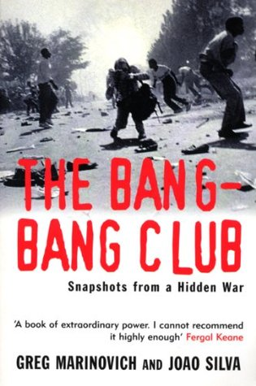
Little Ice Cream Boy (Jacques Pauw, 2009)
Jacques Pauw est un journaliste d’investigation qui a écrit de nombreux ouvrages sur l’Afrique du Sud (sur la classe politique pendant et après l’apartheid, sur la police, mais aussi sur le génocide au Rwanda ou encore la guerre au Darfour). C’est un journaliste respecté mais qui dérange. Je sais que je vais me faire des ennemis, mais c’est une sorte d’Edwy Plenel. Lors de la sortie de son ouvrage sur l’ex-président Zuma, très critique, une grande réception était organisée pour séance de dédicace et discours. Et que s’est-il passé au moment des discours ? Une coupure de courant.
Pour en revenir à ce livre, il s’agit du premier ouvrage de fiction de Jacques Pauw. Mais la réalité et la fiction s’entremêlent (et il faut bien connaître l’histoire de l’Afrique du Sud, ce qui n’est pas encore mon cas, pour faire la distinction). Jacques Pauw se met dans la peau de Gidéon Goosen, et nous raconte, depuis sa prison et dans un long flashback, comment il est devenu le monstre, tueur, trafiquant et voleur qui a fait la une des journaux.
Né dans une famille dysfonctionnelle avec un père policier, violent, alcoolique, ses fréquentations vont le mener de la petite délinquance au grand banditisme. Il intègrera la police dans les années 80 et rejoindra l’unité créée secrètement au sein de la police (le CBB) pour lutter contre les communistes et l’ANC, par tous les moyens.
Gidéon se souvient donc de chaque détail, des braquages, des meurtres, de la mort de son frère sous les coups de son père, de la drogue, … À l’invitation d’une mère de famille qui le visite en prison et dont il tombe rapidement amoureux, il écrit ses souvenirs et entame un long chemin vers la rédemption.
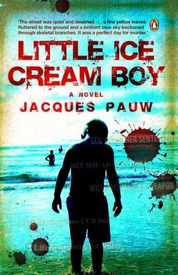
Playing the enemy – Nelson Mandela and the game that made a nation (John Carlin, 2008)
Déjouer l'ennemi. Nelson Mandela et le jeu qui a sauvé une nation
Une citation résume assez bien ce livre : « Les blancs avaient du pain, mais on leur refusait les jeux ». Ce livre a été adapté au cinéma par Clint Eastwood avec le fameux film Invictus. Le journaliste John Carlin raconte les 10 années ayant précédé la victoire de la coupe du monde de rugby 1995 par l’Afrique du Sud.
L’histoire commence en 1985, alors que Mandela est en prison depuis plus de 20 ans. Par son intelligence, son humanité, son charme, il parvient à obtenir le respect (et parfois la sympathie) de ses geôliers, de son gardien de prison aux représentants du gouvernement. Il étudie, apprend l’afrikaans, découvre cette culture. En apprenant leur langue, en étudiant leur culture, Mandela rend le dialogue possible, direct, humain et efficace. En prison, il commence à s’intéresser à « l’opium des Boers », le rugby.
Le rugby, et plus précisément l’équipe nationale, est indissociable de l’apartheid dans l’esprit des sud-africains. Alors qu’elle est adulée par les blancs, elle est huée par les noirs qui y voient un symbole d’oppression et de la volonté de suprématie blanche. Les noirs se désintéressent du rugby, et, quand ils n’ont pas le choix, soutiennent avec vigueur les adversaires des Springboks.
Pendant l’apartheid, la communauté internationale sanctionne progressivement l’Afrique du sud dans tous les domaines. Le sport n’échappe pas à cette règle et l’Afrique du Sud se retrouve privée de compétition internationale. Dans les tournées qu’elle organise parfois à l’étranger, l’accueil est très hostile. C’est une véritable souffrance pour de nombreux fans de rugby.
En prison, une idée germe dans la tête de Mandela : utiliser le rugby comme vecteur de réconciliation, comme symbole d’unité de la future Afrique du Sud. Pour cela, il faut vaincre les peurs des blancs envers les noirs, et il faut faire aimer le rugby aux noirs. Mission impossible ? Mandela, dès sa libération, met en place une grande offensive pour réussir ce pari fou. Mandela sait qu’il doit unir son pays en passant par des évènements fondateurs, par des émotions, par une belle histoire, par des valeurs.
Quand Mandela sort de prison, le pays est très divisé. Les blancs, qui ont majoritairement soutenu les mesures d’ouverture de la fin des années 80 et la fin de l’apartheid, ont peur pour leur travail, pour leur argent. Ils ne savent pas à quoi s’attendre. Plusieurs incidents font penser que le pays va sombrer dans la guerre civile. Mais l’intelligence politique de Mandela, et celle de De Klerk, permet d’éviter le chaos.
Dès sa sortie de prison, Mandela milite pour que l’Afrique du Sud organise la Coupe du monde 1995. L’Afrique du Sud n’a pas participé à la coupe du monde 1991 et lorsque le pays est finalement désigné pour organiser (et participer à) la coupe du monde 95, c’est une joie immense pour tous les blancs du pays, et ils le doivent à Mandela. L’équipe de l’Afrique du Sud est loin d’être favorite, derrière les All Blacks, la France, l’Australie ou l’Angleterre. Mais c’est déjà une grande victoire.
Mais le plus dur est de faire aimer le rugby à des populations qui ont appris à le détester. Là encore, Mandela s’implique à 100%. Il rencontre les joueurs, le coach. Il porte le maillot, assiste à leur préparation, leur fait comprendre l’importance de leur rôle pour unifier le pays. Il mise sur ce qu’il y a de meilleur à l’intérieur de chacun, et il a raison.
Deux légendes du rugby vont l’aider. L’ancien capitaine légendaire des springboks, Morné du Plessis, était présent parmi la foule lors des célébrations de la libération de Mandela. Parmi la foule joyeuse, un blanc aussi grand et aussi célèbre n’était pas passé inaperçu. Il devient manager de l’équipe nationale et prend très à cœur la mission de gagner le cœur de tous les sud-africains, blancs et noirs. Il sera à l’origine de l’organisation de visites des joueurs dans les townships, à la prison de Robben Island ou dans des écoles. Il imposera également des cours de chant à tous les joueurs pour qu’ils apprennent et chantent le nouvel hymne sud-africain « Nkosi Sikelele Afrika », chant noir de résistance à l’apartheid. Les images, diffusées à la télé provoqueront un véritable choc émotionnel.
Le capitaine François Pienaar jouera lui aussi un rôle essentiel. Absolument pas politisé, sa rencontre avec Mandela va le changer. Il va mener l’équipe de manière irréprochable, sur et en dehors du terrain, et galvanisera toute l’équipe pour atteindre cet objectif fou : gagner la coupe du monde et construire une Nation.
Personne ne mise sur l’Afrique du Sud. Le tournoi commence parfaitement par une victoire contre l’Australie, prétendante au titre. Après des victoires faciles contre la Roumanie et le Canada, les choses sérieuses commencent en quart de finale. Déjà, la ferveur autour de l’équipe est élevée. Les footings des joueurs dans les rues du Cap sont salués par tous. Les joueurs sentent que tout cela les dépasse. En quart de finale, l’Afrique du Sud se défait très facilement des Samoa alors que l’Australie est éliminée par l’Angleterre. La Nouvelle-Zélande et la France complète le tableau. Dans une demie finale très accrochée, dont le sort aurait peut-être changé si l'arbitrage vidéo existait, l’Afrique du Sud bat le XV de France et se qualifie pour la finale.
En finale, les springboks affrontent les imbattables néo-zélandais et la superstar Jonah Lomu qui a martyrisé la défense anglaise en demi-finale.
Lors de la finale, qui se tient à Johannesburg, une foule entière, métissée mais majoritairement blanche, assiste à ce moment d’histoire. Mandela entre sur le terrain avec le maillot de l’Afrique du Sud floqué du numéro 6 de François Pienaar. La foule scandera : « Nelson ! Nelson ! Nelson ! ».
La finale est intense et se poursuit, fait relativement rare, au delà du temps réglementaire en raison d’une égalité parfaite. Joel Stransky marquera le drop de la victoire. La photo de Mandela remettant la coupe Webb Elis à François Pienaar fera le tour du monde. Mandela a réussi son pari.
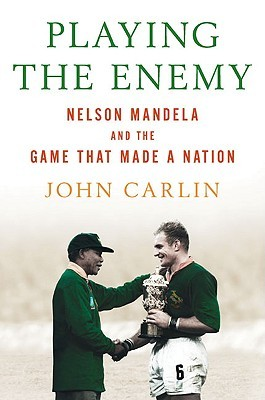
Jan Smuts – Unafraid of Greatness (Richard Steyn, 2015)
À Westminster, devant le Parlement, 12 statues sont érigées. Quatre d’entre elles ont un lien très fort avec l’Afrique du Sud. On y trouve Nelson Mandela évidemment, mais aussi Gandhi, qui vécut plus de 20 ans en Afrique du Sud, et Churchill, qui était en Afrique du Sud pendant la guerre anglo-boer. La 4e statue représente Jan Smuts. Avec Gandhi, Mandela et Smuts, un quatrième étranger est représenté : Lincoln.
Juriste, homme politique, soldat, scientifique, philosophe, chef d’Etat respecté dans le monde entier, Jan Smuts est sans doute, avec Nelson Mandela, l’homme qui a le plus marqué de son empreinte l’histoire de l’Afrique du Sud. Ce brillant esprit a été de tous les combats pendant la première moitié du 20e siècle dans son pays, mais aussi et surtout à l’étranger. Smuts est un personnage très complexe, un progressiste, un humaniste, un intellectuel, mais il serait faux de dire que le sort des populations noires, métisses et indiennes était sa priorité.
Sa biographie est divisée en 2 parties : la première est un récit chronologique de sa vie ; la seconde est une approche thématique retraçant les grands dossiers de sa vie. Je ne vous résume ici que la première partie, qui complète assez bien la partie historique développée au début du chapitre 3 de mes aventures.
Jan Smuts nait près du Cap en 1870. Il ne commence l’école qu’à 12 ans, remplaçant son grand frère, décédé. En 1891, il termine premier en littérature et en sciences à l’université du Cap, ce qui lui offre une bourse pour étudier Cambridge. Il termine Cambridge 3 ans plus tard en étant le premier étudiant de l’histoire de l’école à terminer premier dans les 2 épreuves de droit. Un de ses professeurs dira que Cambridge n’a connu que 3 esprits purement exceptionnels : John Milton, Charles Darwin et Jan Smuts.
À son retour en Afrique du Sud, il devient avocat au Cap et commence à s’intéresser à la politique. Un an plus tard, il s’installe à Johannesburg avec son épouse, abandonne le métier d’avocat et devient Procureur général (state attorney) et conseiller du Président Paul Kruger à l’âge de 28 ans. Petite précision, Paul Kruger était président du Transvaal, qu’on appelle aussi South African Republic, mais qui ne correspond qu’à la partie nord de l’Afrique du Sud actuelle, il a donné son nom au Parc Kruger, plus grande réserve naturelle au monde.
La seconde guerre anglo-boer éclate (1899-1902). Très impliqué dans la planification du conflit, il se distingue comme soldat, stratège et leader d’hommes et emporte de nombreuses batailles contre les britanniques. Il participe aux négociations de paix en 1902 en tant que conseil juridique du gouvernement du Transvaal (rappel, il y avait 4 grands colonies britanniques : Cape Colony, Natal, Orange Free State et Transvaal). Après la signature des accords de paix, il fonde, avec son ami Louis Botha le South African Party (SAP). En 1907, il est nommé Ministre de l’Education dans le gouvernement du Transvaal, dirigé par Botha. Il s’emploie à rédiger la future constitution de l’Union Sud-Africaine et cherche à obtenir un consensus politique parmi les quatre colonies britanniques.
En 1908, Smuts rencontre Gandhi, qui organise la résistance des populations indiennes contre un enregistrement obligatoire. Les 2 leaders trouveront un compromis et Smuts rendra l’enregistrement facultatif. Gandhi et Smuts conserveront des relations respectueuses et amicales jusqu’au décès de Gandhi.
À cette époque, il pense que les populations noires doivent être traitées avec respect et justice et doivent être accompagnées, élevées vers la civilisation par l’homme blanc, éduqué. Il pense qu’on ne doit pas leur donner le pouvoir politique, le droit de vote. La priorité absolue de Smuts, à l’époque, est de réussir la réconciliation entre les Afrikaans et les anglais.
Après 1910, Smuts devient Ministre de l’intérieur, de la Défense et des Mines (sacré portefeuille !). Déjà, en raison de son attitude en faveur de la réconciliation avec l’ennemi anglais, il est impopulaire parmi les siens (Afrikaans). Il deviendra l’ennemi juré des Nationalistes Afrikaans quand il refusera de gracier un rebelle condamné à mort après le putsch Boer raté en 1914 (putsch en réaction à l’entrée en guerre de l’Afrique du Sud aux côtés des anglais).
Pendant la Première Guerre Mondiale, il dirige les armées dans le conflit sur le continent africain, notamment contre la colonie allemande voisine (Sud-Ouest Africain Allemand, désormais la Namibie). À de nombreuses occasions, il est à Londres et intègre le très restreint War Cabinet (alors même qu’il n’est pas anglais, mais c’est un détail). Il suggère la création de la Royal Air Force et en dessine les contours. Il obtient également des avancées dans l’indépendance des dominions britanniques, dont l’Afrique du Sud fait alors partie. Enfin, il milite pour l’instauration d’une Ligue des Nations (ou Société des Nations) et en rédige la constitution. En 1919, il participe, à Versailles, à la conférence de paix avec le Premier Ministre Botha. Il alerte à de nombreuses reprises (en privé puis publiquement) sur la nécessité de ne pas punir excessivement les vaincus afin d’éviter l’émergence d’un esprit de vengeance. Mais il n’obtient pas satisfaction, quelqu’un doit payer, et ce sera l’Allemagne.
En 1919, suite au décès de Botha, il devient, naturellement, Premier Ministre. En 1921, il réussit à faire converger l’Union Party et le SAP, renforçant ainsi son pouvoir. Mais le contexte difficile, la chute du cours de l’or, la répression sévère des grèves des mineurs blancs, entre autres, couteront à Smuts l’élection de 1924, aux termes de laquelle le parti nationaliste de Hertzog parvient au pouvoir pour la première fois. Smuts devient leader de l’opposition.
Il profite de cette période pour lire, écrire. En 1926, il publie « Holism and Evolution », livre dans lequel il nomme et développe ce nouveau concept philosophique. Albert Einstein, après avoir lu le livre de Smuts, déclara que « deux modèles guideraient l’humanité au cours du prochain millénaire : le holisme et la relativité ». Smuts écrit également un ouvrage sur les différents types d’herbes en Afrique du Sud. En 1930, il est invité à présider l’Association britannique pour le développement des sciences. Devant des scientifiques du monde entier, il prononce un discours remarquable retraçant les progrès techniques récents dans les domaines de la physique, de la chimie, de l’astronomie, des mathématiques…
En 1933, pour les raisons indiquées dans la partie historique, il devient Vice-Premier ministre de Hertzog et tous deux forment une coalition qui provoque la création d’un parti extrémiste en réaction (le Parti de Malan). Mais en 1939, la coalition ne tient pas le choc du début de la guerre. La proposition de Hertzog de rester neutre pendant la guerre est mise au vote au Parlement. Elle est minoritaire. Smuts redevient Premier Ministre. La neutralité était peut-être une option politique, mais compte tenu de la position stratégique de l’Afrique du Sud, Smuts savait que le pays allait être entrainé dans ce conflit planétaire. Il agit très vite car l’armée était totalement laissée à l’abandon et, en attendant le soutien matériel des Etats-Unis et des britanniques, l’Afrique du Sud était très vulnérable. Comme il l’avait prédit, l’Afrique du Sud est entrainée immédiatement dans le conflit et la position stratégique du pays est renforcée par les nombreux bateaux qui évitent les dangers de la méditerranée et préfèrent utiliser « l’ancienne » route passant par le Cap.
En décidant de participer au conflit (même s’il n’avait pas vraiment le choix), Smuts se met encore à dos de nombreux Afrikaans.
Durant la guerre, l’aura et l’intelligence de Smuts le rendent indispensable à Londres, auprès de Churchill. Il contribue pleinement et influence les décisions stratégiques des forces alliées. Fait unique pour un étranger, il est promu Field Marshal (Maréchal), le grade le plus haut de l’armée britannique.
Pour vous donner un aperçu de la renommée et du respect qu’inspirait Smuts, voici un passage vidéo d’un discours qu’il prononça devant les chambres réunies du Parlement, où il annonce qu’une nouvelle phase de la guerre doit commencer, celle de l’offensive :
À la fin du conflit, il est convié à la conférence de Paris. Il est le seul représentant qui était déjà présent à Versailles, 25 ans plus tôt. Après la guerre, il est chargé de rédiger un premier jet de la Charte des Nations Unies, qu’il appelle de ses vœux depuis des années.
Pendant ce temps, en Afrique du Sud, les organisations représentant les populations non-blanches font peu à peu connaître leur profond mécontentement. En réaction, Smuts établit une commission au sortir de la guerre pour étudier, analyser et si besoin corriger les lois existantes concernant les populations noires dans les villes, les permis de travail et de circulation, ou encore les conditions de travail des migrants. Dans le même temps, le parti de Malan commence à faire campagne sur la politique de l’apartheid.
Smuts reprend la proposition de la commission consistant à accepter le fait que les blancs et les autres races coexistent sur un même territoire et que les législations et l’administration doivent tenir compte des différences entre eux. Comme la commission, il considère que la politique de l’apartheid ou la totale ségrégation ne sont pas souhaitables et réalisables : « L’idée selon laquelle les Natifs doivent être déplacés et confinés dans leurs villages est, à mon humble avis, la plus grande absurdité qu’il m’ait été donné d’entendre ».
Mais lors des élections de 1948, à la surprise générale, le parti de Malan remporte la majorité des sièges (alors que le parti de Smuts l’emporte en nombre de voix). Malan devient premier ministre.
Au jeu des alliances, Smuts aurait pu conserver son poste de Premier ministre, et beaucoup, au sein de son propre parti, l’incitait à le faire. Mais il ne voulait pas s’associer avec des élus ayant des divergences profondes sur de trop nombreux sujets. En 1949, Malan fait passer une nouvelle législation offrant 6 sièges à l’Afrique du Sud-Ouest (future Namibie, sous administration sud-africaine à l’époque). Les 6 sièges sont gagnés par Malan, qui a alors les mains libres.
Le 11 septembre 1950, Jan Smuts meurt à l’âge de 80 ans.
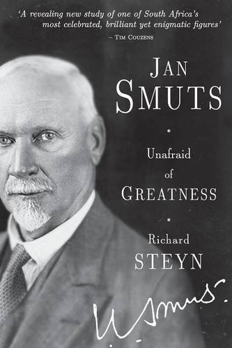
An instant in the wind (André Brink, 1975)
« Un instant dans le vent » est le deuxième livre d’André Brink que je lis après le très célèbre « Une saison blanche et sèche ».
Au milieu du XVIIIe siècle, Elisabeth, une jeune femme blanche qui s’ennuie fortement au Cap, décide de suivre son mari, explorateur qui parcourt le monde pour découvrir et répertorier de nouvelles espèces de faune et de flore. Cette fois ci, ils s’aventurent dans les terres intérieures, au nord du Cap, avec des provisions, des chariots, et tout le confort nécessaire (incluant des esclaves…).
Mais, confrontés à la nature hostile, après plusieurs péripéties, ils se retrouvent sans esclaves et perdent la plupart de leurs possessions. Ils poursuivent néanmoins leur chemin.
Le livre commence avec Elisabeth qui attend depuis plusieurs jours le retour de son mari, parti à la poursuite d’un oiseau exotique. Alors qu’elle commence à perdre espoir, un homme noir, sorti de nulle part, s’avance vers elle. Il s’agit d’Adam, un esclave qui s’est enfui du Cap il y a quelques temps, et qui pense qu’elle a besoin d’aide. Tout les oppose et la haine est palpable dans leurs échanges. Adam n’est aux yeux d’Elisabeth qu’un sauvage qui va la violer. Elisabeth représente pour Adam l’oppression et l’ignorance du monde qui l’entoure. Mais Adam accepte de voyager avec Elisabeth, et de se lancer dans un périple de plusieurs mois jusqu’à la mer. Elisabeth a besoin d’Adam pour survivre. Adam a besoin d’Elisabeth s’il veut retourner au Cap et être enfin libre.
Peu à peu, Elisabeth et Adam s’apprivoisent. Et finalement, une véritable histoire d’amour, complexe, débute. Ils feront durer le voyage pendant de longs mois, ralentis par l’hiver, par le relief escarpé, par les rencontres avec des bêtes sauvages, mais aussi et surtout par leur volonté de rester ensemble, hors du temps.
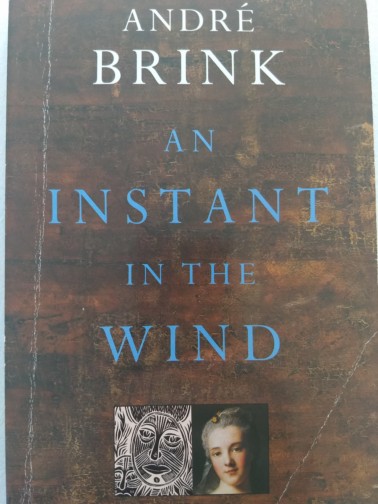
Age of Iron (John Maxwell Coetzee, 1990)
J. M. Coetzee est l'auteur de nombreux ouvrages à succès. Il est à ce jour le seul sud-africain à avoir reçu le prix Nobel de littérature, en 2003
L'Âge de fer est un roman très noir, pessimiste, déprimant. Le récit se déroule dans les années 80, au Cap, et relate les derniers jours d'une professeure de lettres retraitée qui vient d'être diagnostiquée d'un cancer.
Cette retraitée, pleine de générosité et d'idéaux, va être directement confrontée à la violence de l'appartheid. Le livre prend la forme d'une longue lettre, destinée à sa fille unique, qui est partie vivre aux Etats-Unis pour montrer son opposition à l'appartheid. Elle y raconte les derniers évènements qui viennent perturber sa routine : les émeutes et la repression dans les townships voisins, la mort du fils de sa domestique et d'un de ses amis, l'arrivée dans sa vie d'un sans-abri, vagabond alcoolique et taiseux, qu'elle accueille chez elle.
Seule et fatiguée de se battre contre l'injustice, elle va se lier d'amitié avec le vagabond qu'elle héberge et celui-ci va devenir sa bouée de sauvetage, son seul ami, son confident.
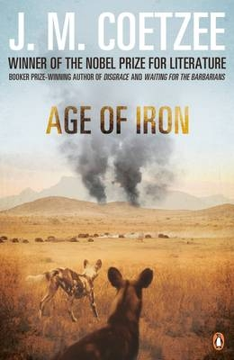
Heart of the Hunter (Deon Meyer, 2012)
Deon Meyer est un célèbre auteur sud-africain, qui a écrit de nombreux romans policiers et reçu de nombreux prix. Il a acquis la réputation d’être un des meilleurs auteurs de « thrillers » au monde et plusieurs de ses livres sont adaptés en films ou en séries. Les intrigues de ses romans s’inscrivent principalement dans l’Afrique du Sud post-apartheid.
Thobela, le personnage principal de ce roman, fut un combattant pour la liberté, un assassin, entrainé à l’étranger, au sein du KGB. Après la chute de l’apartheid, il revient dans son pays et travaille tranquillement dans un garage, loin de son passé. Mais son passé va ressurgir et bousculer sa routine lorsque la fille de Johnny K, un vieil ami, vient le supplier de l’aider.
Johnny fut l’informaticien en charge de collecter, de centraliser et d’uniformiser les archives des services gouvernementaux de la nouvelle Afrique du Sud. Très vite, il se rend compte que des documents disparaissent. Il décide de sauvegarder sur son ordinateur et sur disque dur tout ce qui lui semble important.
Mais il est désormais l’ôtage d’une dangereuse organisation qui souhaite récupérer le disque dur contenant ces informations compromettantes sur le gouvernement et toute l’élite sud-africaine. Le disque doit être livré à Lusaka (Zambie), 72h plus tard.
Après avoir en vain essayé de prendre l’avion et échappé à la police à l’aéroport, Thobela emprunte une moto dans le garage où il travaille et se met en route. Les services secrets, la police, l’armée, et d’autres vont tout faire pour l’arrêter et éviter que le fameux disque dur ne tombe aux mains des américains, d’une organisation terroriste ou de l’opposition.
Une véritable chasse à l’homme commence entre le Cap et Lusaka. Cette traque est rendue difficile par les rivalités entre les services du gouvernement, par la recherche d’un espion américain infiltré au sein des services secrets sud-africains mais encore par la corruption et l’incompétence de certains agents… La presse, qui ne tarde pas à s’intéresser à cette affaire, vient aussi compliquer la tâche en relayant les fuites qui viennent de la police, en posant les questions qui fâchent, et en suscitant une vague de sympathie dans tout le pays pour le fugitif.
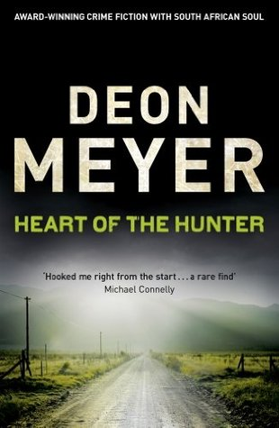
On the contrary (André Brink, 1993)
C’est mon 3e livre de Brink (après “A Dry White Season” et “An Instant in the Wind”). Celui-ci est beaucoup plus léger, plus poétique. Le narrateur est Etienne Barbier, un soldat d’origine française qui raconte ses aventures en Afrique du Sud (alors sous la coupe de la Compagnie néerlandaise des Indes orientales).
Etienne est condamné à mort pour avoir aidé une esclave à s’échapper et pour avoir organisé une révolte contre le pouvoir corrompu en place. Il attend, dans son cachot, l’heure de son exécution et écrit une longue lettre imaginaire à l’esclave qu’il a libéré. Il n’y a pas que la lettre qui est imaginaire. On comprend assez vite que son récit, comme celui de Don Quichotte qu’il mentionne régulièrement, est truffé d’exagération, de rêves, d’exploits inventés. Au cours de son périple à la recherche d’une cité légendaire abritant tout l’or du monde, il traverse l’Afrique du Sud de l’époque et en peint un portrait saisissant : la vie des premiers fermiers hollandais qui se sont installés dans les terres intérieures, les rivalités entre tribus, la corruption de l’administration et de la justice du Cap. Dans sa croisade contre l’injustice, il est aidé par Jeanne d’Arc, dont la voix l’accompagne dans les moments de doute…
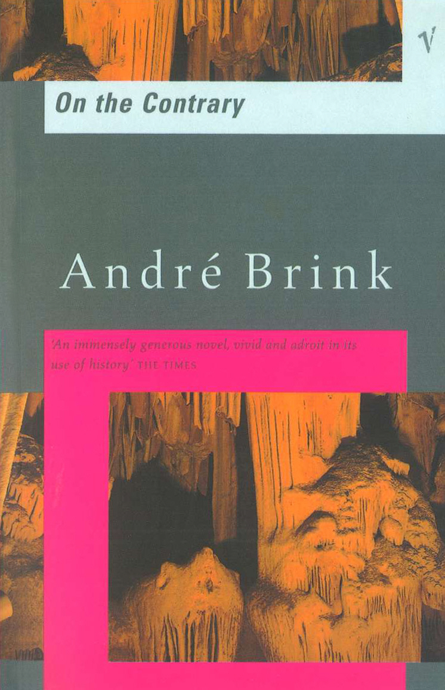
My traitor's heart (Rian Malan, 1990)
Rian Malan est un journaliste, écrivain, musicien, documentariste… Il est le descendant d'une grande famille Afrikaner vieille de plusieurs siècles, fondé par Jacques Malan, Huguenot arrivé au Cap avant 1689. Parmi les descendants de Jacques Malan, on trouve également Daniel François Malan, le Premier ministre qui a mis en place l’appartheid.
"Mon coeur de traître" de Rian Malan est une autobiographie qui se passe principalement dans les années 70. Rian, garçon blanc de la classe moyenne elevé dans une famille pro-appartheid, devient l’ami des noirs. Il travaille comme reporter criminel pour un journal local de Johannesburg et est ainsi confronté de manière violente aux horreurs provoquées par l'apartheid: la pauvreté, l'injustice et la violence.
Il décide finalement de fuir l'Afrique du Sud après s'être retrouvé face à face avec les atrocités et les terreurs de la guerre entre les races. Ce livre est le récit de son retour après huit ans d'exil. Plus mûr, plus conscient, il explore l'héritage de la haine et de la souffrance de l'apartheid, témoignant des dommages physiques et émotionnels considérables qu'il a causés à des générations de Sud-Africains.
Dans ce livre, Rian Malan essaie de comprendre son pays, sa haine raciale et sa propre conscience torturée, avec beaucoup d’autoflagellation. La honte de porter ce nom, la honte d’avoir fui son pays, l’impuissance face à cette injustice. Il cherche la rédemption.
Rian Malan s’est également fait remarquer il y a quelques années pour avoir lancé le débat polémique sur les origines de la chanson « Le Lion est mort ce soir », en remontant jusqu’à son écriture et son premier enregistrement par Solomon Linda, un chanteur Zulu sans le sou.
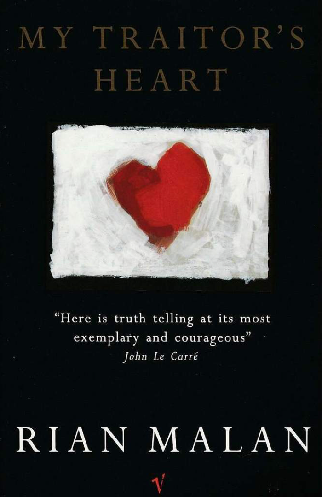